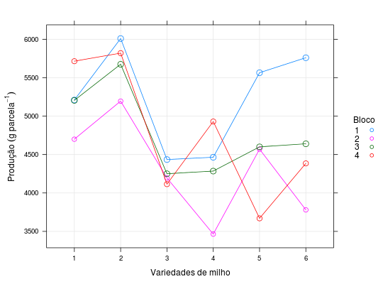

Resultados de um experimento para avaliação da produção de cultivares de milho. O experimento foi instalado em delineamento de blocos casualizados. Além da produção em cada parcela, contou-se o número de plantas por parcela (stand)
Um data.frame com 24 observações e 6 variáveis, em que
variedABbloconpppprodOs fatores A e B são fictícios pois foram criados apenas para demonstrar como fazer a análise caso o experimento fosse um fatorial 3 \(\times\) 2 ao invés de ter um único fator de 6 níveis.
BANZATTO; KRONKA (2013), Quadro 9.2.1, pág. 206.
library(lattice) data(BanzattoQd9.2.1)#> Warning: data set ‘BanzattoQd9.2.1’ not foundstr(BanzattoQd9.2.1)#> 'data.frame': 24 obs. of 6 variables: #> $ varied: Factor w/ 6 levels "1","2","3","4",..: 1 1 1 1 2 2 2 2 3 3 ... #> $ A : Factor w/ 3 levels "1","2","3": 1 1 1 1 1 1 1 1 2 2 ... #> $ B : Factor w/ 2 levels "1","2": 1 1 1 1 2 2 2 2 1 1 ... #> $ bloco : Factor w/ 4 levels "1","2","3","4": 1 2 3 4 1 2 3 4 1 2 ... #> $ nppp : num 49 47 49 48 48 45 48 46 50 44 ... #> $ prod : num 5210 4700 5205 5715 6010 ...xyplot(prod ~ varied, data = BanzattoQd9.2.1, groups = bloco, type = c("p", "a", "g"), as.table = TRUE, cex = with(BanzattoQd9.2.1, 0.5 + (nppp - min(nppp))/diff(range(nppp))), auto.key = list(space = "right", title = "Bloco", cex.title = 1, columns = 1), xlab = "Variedades de milho", ylab = expression("Produção"~(g~parcela^{-1})))